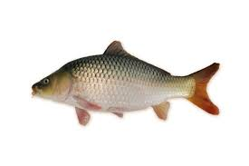
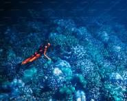

RAJA IKAN
Tentang Saya
Perkenalkan saya Raja Ikan. Saya adalah raja dari ikan. Sebelum jadi raja, saya hanyalah ikan biasa. Ceritanya panjang dan menyedihkan.
Rate perjalanan hidup saya:
Hobi Saya

Menjelajahi Terumbu Karang
Saya sangat suka berenang di antara terumbu karang yang indah.

Menghindari Pancing
Skill utama saya adalah menghindari pancingan dengan gaya akrobatik.
Bernyanyi di Laut
Saat malam, saya dan ikan lainnya bernyanyi bersama.
Prestasi Saya
Akademik & Non-Akademik